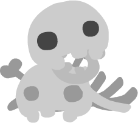
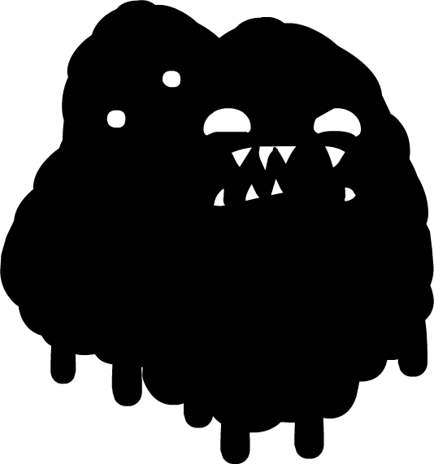

Contents
Overview - Details general NPC information.
NPC Listing (IDs and Movie Clips) - Lists all the NPCs in the game.
Sound IDs - Lists the available Sound IDs for NPCs.
Text - Details about the text system for NPCs.
Alt. Text - Details about the alternate text system.
Adding NPCs - Explains how to add NPCs to the game.
Remarks - General and misc. information.
Overview
Location in the unpacked data: data\npcs.txt
The NPCs file dictates information regarding all the available NPCs in the game; it defines the traits of each NPC: sound, graphics, text, and all of the aspects that make the different NPCs unique and interesting.
Here is an example of the syntax of one NPC taken from the file (NPC0):
01 NPC0 {
02 #basic sideways
03 movieclip NPC0
04 sound_id NPCSkull
05 text [
06 "oh \n . . . \n its you. . ."
07 "must be nice \n being alive \nn’ all that"
08 "when i died \n that tumor wiggled out"
09 "it’s been floating \n up there for years \n watching me"
10 "please\n dont take it. . . \n its all i have left"
11 ]
12 }
Whilst this may seem complex, the syntax for an NPC can be broken down and represented as the following:
1 [NPC_ID] {
2 moviclip [VALUE]
2 sound_id [VALUE]
4 text [
5 "[VALUE]"
6 ...
7 ]
8 }
The # followed by text, in the example, is simply a comment and not interpreted/read by the game itself, hence why it was not added in the simplified syntax breakdown. These comments have been added to all the NPCs in the "npcs.txt" file to allow for more readability.
So, overall, the "npcs.txt" file simply stores a series of NPCS and their properties, that can be placed into the game for the player to interact with. Read on for more information on each of these variables, as well as how to add/modify NPCs.
NPC Listing (IDs and Movie Clips)
A graphical list displaying all of the NPCs within the game. With their appropriate NPC IDs (the values used to set NPCs in the Tilesets file) below them, these values also double-up as being the names used to reference the particular movie_clip (graphic/sprite) that an NPC is given. Remember that variables and their values are case-sensitive, in the case of NPCs all of the IDs are fully capitalised, no lower-case.
Skeletons |
|||||
|---|---|---|---|---|---|
 NPC0 |
 NPC1 |
NPC2 |
NPC3 |
NPC4 |
NPC5 |
NPC6 |
NPC7 |
NPC8 |
NPC9 |
NPC10 |
NPC11 |
 NPC12 |
NPC13 |
NPC14 |
 NPC15 |
NPC16 |
NPC17 |
Light Blobs |
||||||
|---|---|---|---|---|---|---|
NPCB1 |
NPCB2 |
NPCB3 |
NPCB4 |
 NPCB5 |
NPCB6 |
NPCB7 |
Ghosts |
||||||
|---|---|---|---|---|---|---|
NPCG1 |
NPCG2 |
NPCG3 |
 NPCG4 |
NPCG5 |
NPCG6 |
NPCG7 |
Dark Blobs |
||||||
|---|---|---|---|---|---|---|
NPCD1 |
NPCD2 |
NPCD3 |
NPCD4 |
 NPCD5 |
NPCD6 |
NPCD7 |
Characters |
||||
|---|---|---|---|---|
 NPCX1 |
NPCX2 |
NPCX3 |
NPCX4 |
NPCX5 |
Stevens |
||||||
|---|---|---|---|---|---|---|
NPCH1 |
NPCH2 |
NPCH3 |
NPCH4 |
|||
As well as the NPC movie clips listed above, NPCs can also be assigned any of the alternate art values as their movie_clip value. For a full listing on the available movie clips that can be used, see the Art Alts. section.
Sound IDs
The sound_id variable is used to define the sound played when the NPC is spoken to and when text is advanced. The available sound IDs are as follows (the values in brackets mark what sound file each sound ID references):
NPCSkull (audio\sfx\skullnpc.wav)
NPCBlob (audio\sfx\squishnpc.wav)
NPCGhost (audio\sfx\ghostnpc.wav)
NPCIsaac (audio\sfx\isaacnpc.wav)
NPCStevenCameo (audio\sfx\stevenheadwarpnpc.wav)
NPCGish (audio\sfx\gishnpc.wav)
NPCGuppy (audio\sfx\catnpc.wav)
NPCAether (audio\sfx\aethernpc.wav)
NPCSteven (audio\sfx\stevennpc.wav)
New sounds can be created by modifying "mainsounds.txt" and "retrosounds.txt"; see the section Sounds for more information on creating new sounds.
Text
The text variable details what text will be displayed when the NPC is interacted with; there are certain formatting rules regarding this text that are quite important in ensuring that the NPC’s text works correctly and looks visually appealing. Below is some example text from an NPC that can be used to compare with what is being explained, to make it easier to understand:
01 text [
02 "when i used\n to hang off\n a wall"
03 "id pull\n out from it \nand then"
04 "id do a \n jump. . . and \n go like super far!"
05 "but when i \ndidn’t pull \noutwards"
06 "id mostly just \n go up higher"
07 "i call it the \npull out method"
08 "\n. . ."
09 "i made that \none up years \nago"
10 "i imagined it \nwould get more \nof a laugh"
11 "\n. . ."
12 "please \nleave me alone"
13 ]
Text is entirely contained within square brackets []. When writing text ensure that it is always wrapped inside these brackets or else the game may not interpret the text correctly -- or worse, crash.
Text is then split into different sections, each section is encased within quotes "". These sections define when a button-prompt will appear asking the player to advance the text, when the user presses the appropriate button the text will advance and begin scrolling through to the next section. It is important to reguarly split text into sections for easier reading.
Finally, a special type of character is used called a new-line \n, this character informs the game to start writing text on the next line, rather than being displayed itself. Once again, it is important to reguarly add new-lines so that the text does not clip outside of the text box; however, no more than three lines should be in any given text section, otherwise potential veritcal clipping may occur.
The text box itself can fit appoximately 22 characters on each line, however, this number will vary depending on the characters used due to the font having varying character widths.
Alt. Text
The alt_text variable is used and formatted in exactly the same way as the regular text variable. However, this variable is only used on the four Steven NPCs and acts as the alternate text to display when the appropriate number of tumors has been collected. Below is a list of how many tumors is needed to make each NPC trigger their alternate text (these amounts are hard-coded):
NPCH1 - 50 Tumors
NPCH2 - 100 Tumors
NPCH3 - 170 Tumors
NPCH4 - 300 Tumors
Furthermore, the addresses for the various tumor counts needed to trigger alternate text are as follows:
0x000E489D: 50
0x000E495C: 100
0x000E49A8: 170
0x000E4A3A: 300
Attempting to apply the alt_text variable to any other NPC will do nothing. Based on testing, it is apparent that the NPC IDs that react to alternate text are hard-coded into the game and will require executable hacking to modify. The addresses for the alternate text NPCs are as follows:
0x00231274: "NPCH1"
0x002312AC: "NPCH2"
0x002312B4: "NPCH3"
0x00231294: "NPCH4"
For more information on how to modify these values effectively, see the Executable Hacking section.
Adding NPCs
To add an NPC, the first thing that must be done is a new NPC entry must be made in the "npcs.txt" file. This can be written out by following the syntax given in the Overview section, or by copying an existing NPC entry and changing the values as neccessary. When making a new NPC ensure that its ID is completely unique from all the others, otherwise conflicts will occur. Then set all of its variables/properties appropriately, the information in the previous sections of this page can be used as a guide to help.
Once the NPC has had all of its information filled out, it must then be assigned to a specific NPC tile (Z1 - 3), using the "tilesets.txt" file. Locate the specific area tileset that you wish for the NPC to appear in and add in an npc_x variable, where x is a value between 1 and 3; this refers to which NPC tile will be used to place the NPC. An example excerpt from "The End" tileset, shwocasing the NPC definitions:
1 1 {
2 ...
3
4 npc_1 NPC0
5 npc_2 NPC1
6 npc_3 NPC2
7
8 ...
9 }
Once this is done, placing any one of the NPC tiles in a level using this tileset will spawn the new NPC.
For more detailed information on modifying tilesets using the "tilesets.txt" file, click here.
Remarks
Placing one of the NPC tiles (Z1 - 3) in a level with its value in the tileset being undefined or set to none will simply result in nothing appearing at the location. Fortunately the game will not crash or present any other kinds of abstract behaviour.
Setting the NPCs movieclip or sound_id variables to invalid values will result in the game crashing when the level containing the NPC is entered. Futhermore, not includng any of these fields, including text, will also cause a crash. However, if any of these problems occur, the game will display a helpful error message making debugging such as issue relatively easy.
Inclusion of the the text field but leaving it like so: text = [] will lead to the game crashing when the NPC is interacted with; no error message is supplied in such instances.